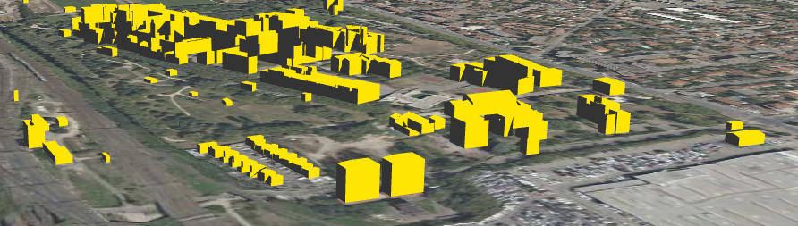
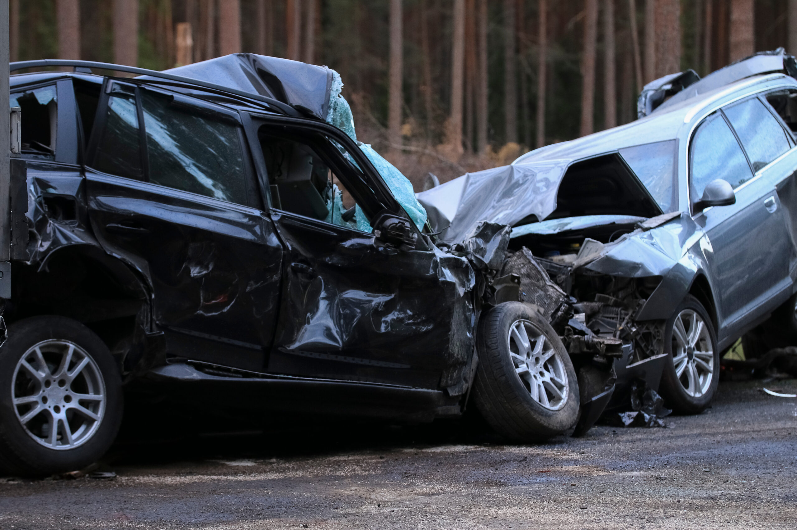
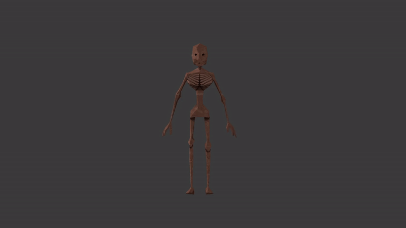
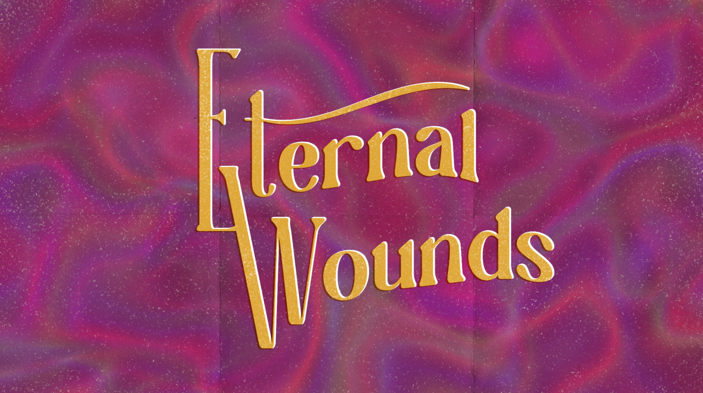
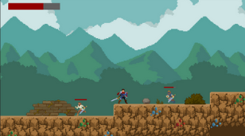
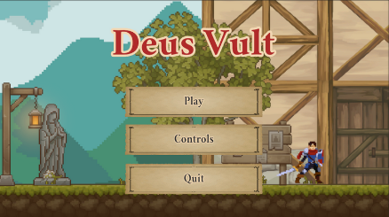
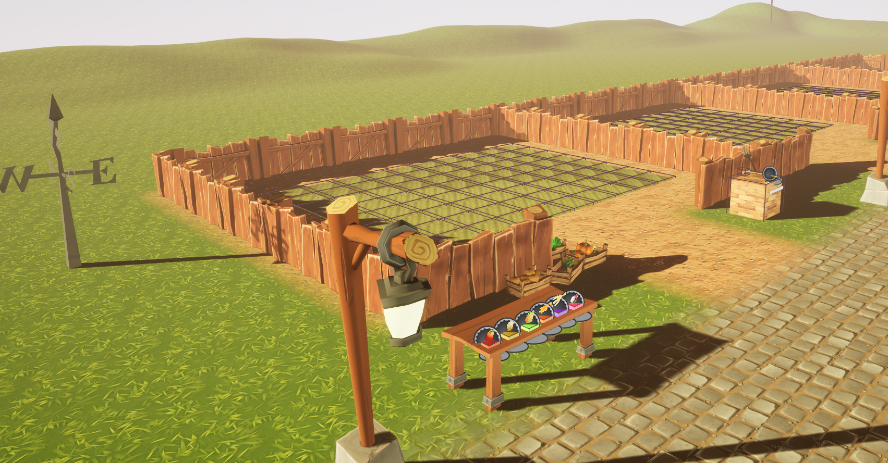
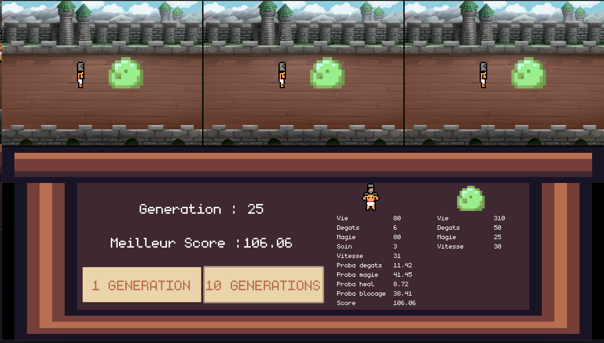

|
Marwan Ait Addi-Russier I'm a First year PhD candidate at LIRIS Laboratory in Lyon. I am part of the TEATIME project. My work focuses on compressing and visualising n-dimensional heritage data, hoping to discover new ways to link and analyse. The Notre-Dame de Paris dataset is my main case study. (I also play the Trombone !) |
{kind=link}
ResearchSome articles are highlighted. |
|  |
Sunligh calculations on 3D Urban data
Marwan Ait Addi, John Samuel, Gilles Gesquieres Liris, 2025 GitHub Technical report, produced during my research internship, describing the work done on Sunlight calculations. We used 3DTiles and ray tracing to detect sunlit faces of urban objects. |
|

|
Application de l’analyse de classification aux accidents de la circulation
routière en France
Juan Diego Alfonso, Laure Gentili, Tiavina Andriamisaina, Marwan Ait Addi-Russier Lyon2 University, 2023 Article Dans cette étude, nous cherchons à utiliser des techniques modernes de science des données pour classifier les accidents de la route en France, afin d’identifier les facteurs de risque associés. |
|
Machine minimization problem for vaccine scheduling
Cristian Grosu, Tim Brouwer, Zhadyra Khattar, Marwan Ait Addi, Allison Lo Utrecht University, 2021 Tackling the problem of machine minimization through the perspective of vaccine scheduling. Both offline and |
Miscelaneous projectsSome articles are highlighted. |
|


|
Eternal Wounds
Gamagora, 2025 itch.io link Video game produced by a team of 15 students for our end of studies project. Puzzle game centered around a character that can remove and replace its limbs, as well as control them independantly. |
|


|
DEUS VULT: A metroivania game developped using Unity
Flavien Gonin, Marwan Ait Addi-Russier Lyon 2 University, 2024 project page Metroid Vania game developped during Crispim Junior Carlos Fernando's course. We used Unity and Flavien's event system. All assets are free of use and/or paid for. |
|

|
ECO GARDEN: A VR Gardening game developped using Unreal Engine 5
Flavien Gonin, Marwan Ait Addi-Russier, Anna Sarbiewski, Ivan Rocque, Anis Hammouche, Alex Clorennec Lyon 2 University, 2024 project page VR Gardening game Proof of concept developped during our Virtual Reality courses. Very short deadline, using Unreal Engine and open assets. |
|

|
BRUTE : A genetic algorithm training to fight a slime
Flavien Gonin, Marwan Ait Addi-Russier, Alex Clorennec Lyon 2 University, 2024 project page Simple genetic algorithm using cross breeding and selection to create the optimal fighter against a slime (Turn based combat) |

|
Ray Tracer
(Work in Progress) project page A ray tracer project following Guillaume Bouchar's course on ray tracing and path tracing. Written in C++ and compiled using CMake. Optimized for speed, it uses a BVH. |
|
Feel free to steal this website's source code. Do not scrape the HTML from this page itself, as it includes analytics tags that you do not want on your own website — use the github code instead. Also, consider using Leonid Keselman's Jekyll fork of this page. |